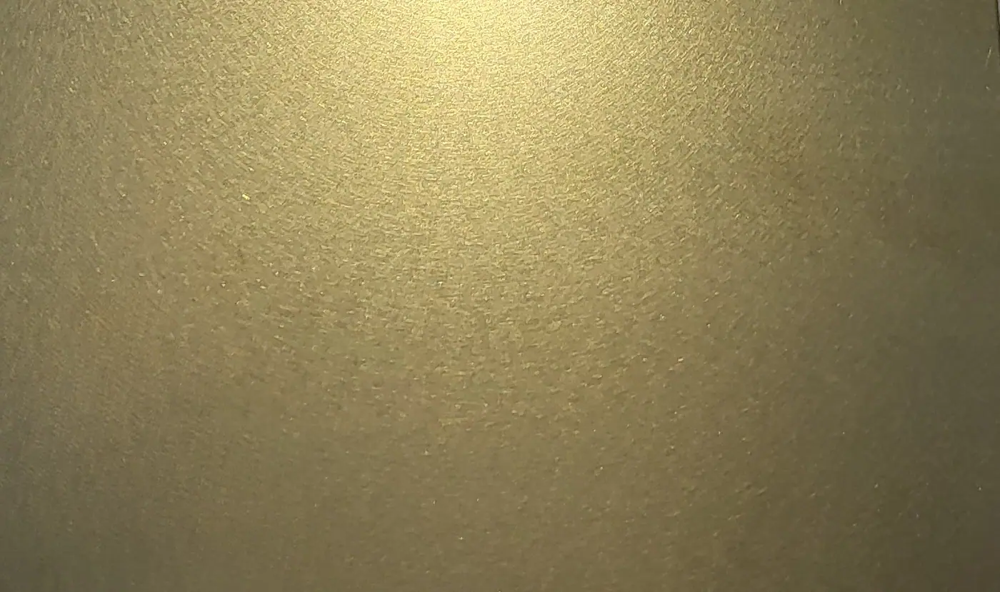

Nothing adds a timeless elegance or touch of class than brass splashback tiles. Rich, characterful and full of life, this metal is an amazing way to elevate a space. Halman Thompson creates brass splashback tiles by hand, to order. They are available as natural , brushed brass or aged brass in a range of shapes, sizes and finishes. You’ll often see brass splashback tiles in show homes, show kitchens, salons, bistros and anywhere that wants to add vibrant colour to a wall without overbearing the design. Brass is the perfect option for anyone that wants to add some pizazz without overdoing it. Brass splashback tiles are easy to install, simple to maintain and will deliver that aesthetic appeal for many years to come.
Please note: our pieces are suitable for use behind non-steam cookers only. It is important that the material is not exposed to direct contact with steam or excessive heat, as this will damage the surface finish.
Contact Halman Thompson for a fast, free hand made brass splashback tile quotation!
Choose a finish




Cut to size
Each of our bespoke finishes can be purchased in sheets cut to your size, perfect for your project.
- Pricing includes delivery and turnaround time is just 5-8 weeks
- Each piece is coated in a gloss finish lacquer that prevents the sheet from further aging
Ready to go
We can provide bespoke cut metal with each of our finishes being wrapped around wood and lacquer finished. Please get in touch for a bespoke quote .
Brass splashback tile finishes
Halman Thompson are experts in brass and can create splashback tiles in a number of finishes, including:
- Natural brass finish – The natural brass finish showcases this lovely metal at its best. It’s light, relaxed and adds a touch of effortless class to any space.
- Wiltshire finish – The Wiltshire aged brass finish is another light style with lots of character. It’s ideal for elevating darker or shaded areas.
- Cambridgeshire finish – The Cambridgeshire brushed brass finish has a milled patina that stands head and shoulders above any other metal.
- Somerset finish – The Somerset finish is interesting on so many levels. It looks different depending on the light, shadow and angle and really is something else!
- Berkshire finish – The Berkshire aged brass finish is lightly burnished and weathered piece of brass . It’s a luxurious material that’s uniquely engaging.
Handmade brass splashback tiles
Halman Thompson are masters of metal. Our artisans craft each brass tile by hand, to your exact specifications. You can choose the size, shape and finish and we’ll create every tile to match.
Each tile begins life as a brass sheet. We cut your tiles to the exact dimensions using a precision laser and finish them so they look amazing.
Popular shapes for brass splashback tiles include squares, rectangles, hexagons, triangle, diamond and fish scale shapes. Choose any shape you like and let us know using the simple order form.
We use specialist processes to artificially age the tiles or prepare them in the case of natural brass.
We prepare every tile at the same time so they reflect and complement each other as closely as possible. There will of course be variation in the exact finish but we do everything we can to keep them all as similar as possible.
We then stop the ageing process and seal the tile in transparent lacquer. The lacquer prevents any further changes in colour and protects each tile from everyday use.
Lacquer is optional with the natural brass finish.
Please note: our pieces are suitable for use behind non-steam cookers only. It is important that the material is not exposed to direct contact with steam or excessive heat, as this will damage the surface finish.
Living with your brass splashback tiles
Splashback tiles are incredibly easy to install and maintain. One more reason to try them!
Installation is simple, prepare the surface in the same way you would for tiles or other wall finish. Apply epoxy resin or adhesive, offer up the tile and finesse until it’s perfect.
Caring for your brass splashback tiles is equally straightforward.
Simply use warm soapy water and a soft cloth to keep them looking amazing. The lacquer protects the tiles from staining and damage. All you have to do is keep the lacquer free from dirt and debris.
All brass splashback tiles from Halman Thompson some with full care and cleaning instructions so you’ll always know what to do.
Contact Halman Thompson today for a fast, free brass splashback tile quote!
Examples of our brass splashback tiles work


If you can dream it, we’ll make it.
Bars, balustrades, staircases, worktops, cladding and pieces that don’t have a name yet. Our designers and craftspeople work in brass, copper, zinc and steel, and alongside wood.